|
| http://news.bbc.co.uk/1/hi/world/europe/3612706.stm
31st August 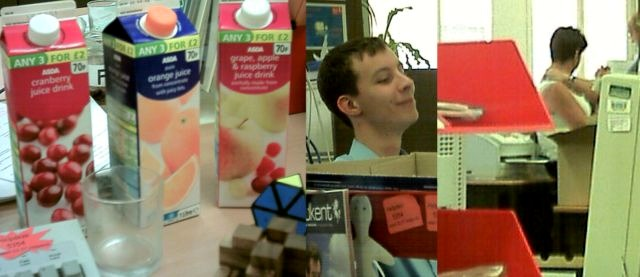 28th AugustQuick update: Went to brixton bowls to meet Tim. It was fun and mellow. Off for a trip tomorrow with Tom and Nigel which should be fun. Have a picture: 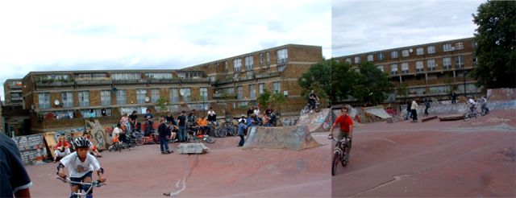 This is the weirdest picture ever. I will explain why another time. 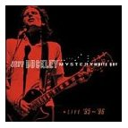 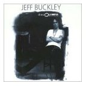 Recently I bought two Jeff Buckley albums: Mystery White Boy and Live At L'Olymia. I haven't listened to them enough to review them yet so I thought I could review his first album Grace. Then I thought about it some more and realised that I don't really like CD reviews. Whate people usually do is a track by track analysis comparing it to other bands and then when you get the CD it sounds nothing like you expected from the review, so I am not going to try that. Then I thought about writing something about Jeff Buckley's short life and untimely death, which is quite interesting, but has been done before a lot of times. Instead I wrote what is below, which is original at least, if a little opinionated. I think one of the problems is that music is such a personal thing and it sounds different to everyone. Rebekah really likes Jeff Buckley, maybe more that me. I think music affects people in different ways and that is why people like different music, but that is more to do with the people than the music. Most people try and define what kind of music they like by the sound of the music. This is also called the genre. Some people like dance music, some people like punk, some people like metal etc. It seems that what people like about these genre's is the way that the music sounds. I do agree that the way the music sounds is important but I think there is more to it than that. Content is incredibly important. For example, the song, Feeling Good has been covered a lot of times and in a lot of different ways, from a slow jazz version by Nina Simone to a rock metal version by Muse. I think this demonstrates that it is the song itself which is good or bad, not the style in which it is done. When I listen to new music I try to hear the good bits in it, whatever style it is in. That's not to say that I enjoy listening to all music, far from it. In fact I think when you start to listen to the quality of the music, and how it is affecting you, you realise how much rubbish music there is, of all genres. However, sometimes you find something truely good, like Jeff Buckley. I remember getting back froma day's riding one day and Rebekah was sitting inside reading a book by the fire with Jeff Buckley on. I came in and just sat and stared at the fire and listened until the CD stopped. There's not many CD's I can listen to without doing anything else, but this is one of them. If you are open to new things then listen to Jeff Buckley. He has written some of the most beautiful music that I have ever heard. 27th August If you are one of those people who reads boring stuff on the internet and then moans how boring it was, here is a quick tip for you, move your cursor to the top right of your screen and click the little cross. byebye. To the rest of you, enjoy. It's Friday and both of my bosses are on holiday. This is what goes on
when the bosses are away and it's Friday. That's me there on the left with
some kinf of rubiks cube in my hand, and on the right a flying pig picture
which is now up on the wall. I didn't color it in but I did cut it out so
that's a good use of work time. 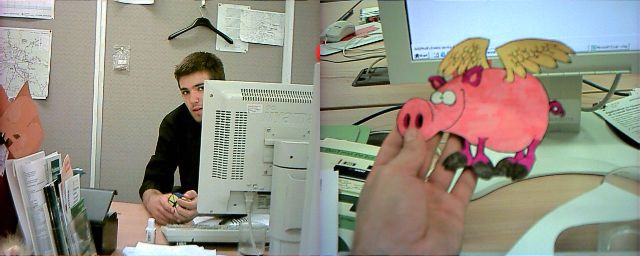 Left: Aisha doing some colouring in. Right: Steve doing some cutting out. Teamwork. 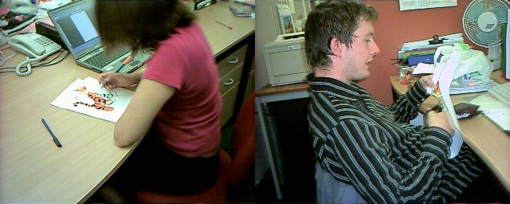 Left: That's Mark, Aka Shrimmo. He wanted me to mention that the reason he has playbus on his desktop was because we work on buses. He has had his hair cut now too. It's his last day today. Right: Steve looking a bit red around the eyes - no reason. 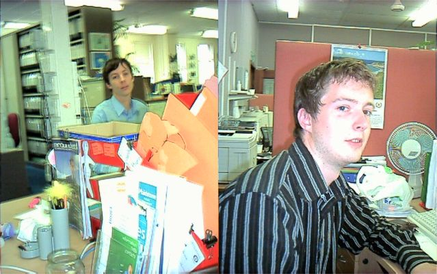 Left: Angus pretending to work. Angus has left now which is a great shame becasue all the ladys love him, including my Mum. I think she will be suprised how old he is though. Right: This is evil bear. I coloured his head in so that he looks like hitler. Other interesting things to note on my desk: The Street album I lent to Steve, Pauls box of dodgy disks, Angus' Zyban stress ball, some money, scissors, a glass, tippex, 2 puzzles, oh and a little bit of work. 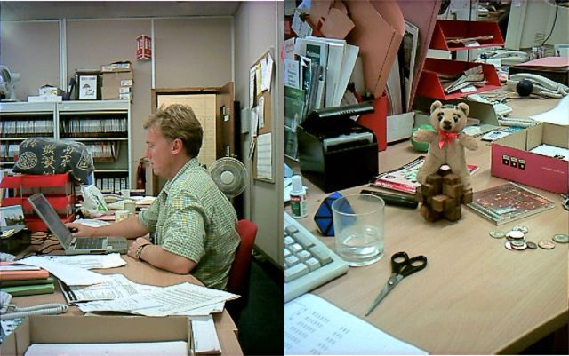 Left: Aisha, Right: Paul. 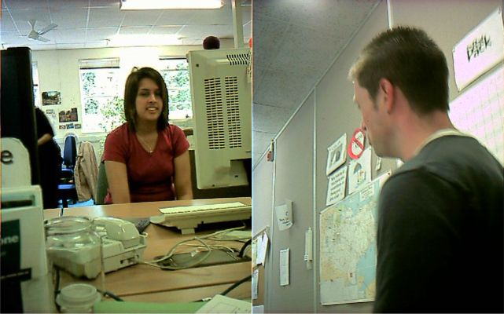 See, isn't going to work interesting. It's still raining. I am really sorry you had to read this. 26th August Then when I got home I got a phone call saying that Tim has broken his arm again. The same one. That is really bad - breaking it twice in a year. So he is being operated on right now I think. Bad news.
This weekend I watched two films. Work is really boring, so time for a
review: The film is not seen in chronological order. It's as if the director
has decided which scene fits in each place in the movie best, and put them
together like that, regardless of time. Ideas of things to do this weekend: 23rd August Usually when cameras take pictures of stuff moving it goes blurry, but
it seems my new camera scans across the image so if something is
moving it get stretched and you get odd photos like these: 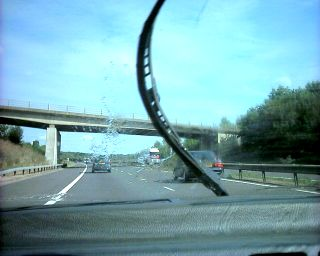 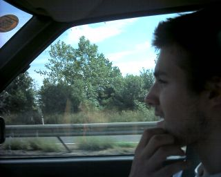 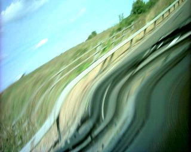 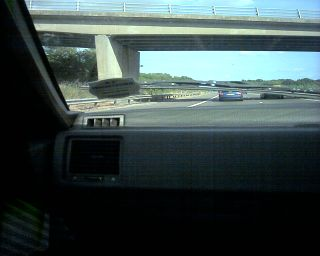 We went to pick up my Mum from her holida but she was late so we amused ourselves as below. No that's not anyone we know in the Limo, we were just waving to everyone. The Limo driver missed the exit and reversed back about 20m when he could have just gone round the roundabout. 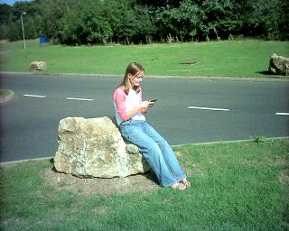 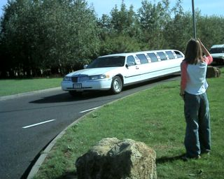 This is interesting. I don't have anything else to say that isn't moaning about rain and things so I'll shut up now. 21st AugustThe wife has been a bit neglected of late so we went shopping. Spent some money we didn't have and took a trip to macdonalds. That picture makes me look like a monkey. 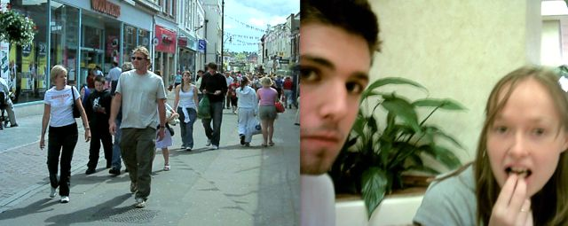 Yak is back from his trips, which means that the shovel load is back, which means lots of good updates. It's gotta be my favorite site these days. Thanks Yak. 20th August 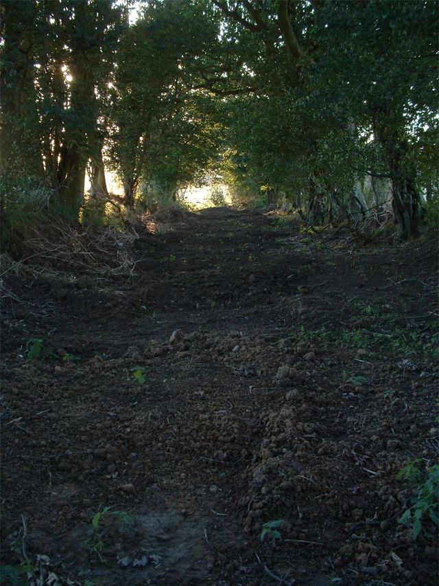 19th AugustGot loads done at Tenterden last night. Joined up two landings, built a table and a really jong jump. There must have been about 10 people digging down there at one point. 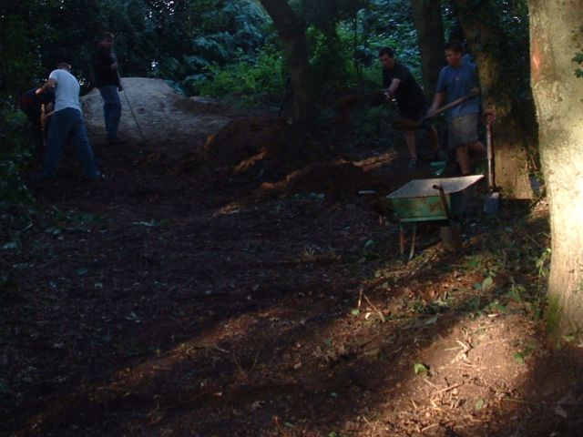 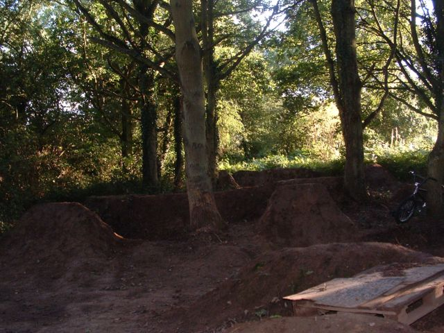 Links fixed: http://www.unknowntrailsrider.tk/ - it's like my crappy site http://www.theshovelload.tk/ - yak's back. http://www.cheltbmx.tk/ - good little site. salty book. http://www.sprocketgrind.com/ - always good for pictures. 18th August Thanks to everyone who signed the book. It's good to meet new people. Tonight we are going to Tenterden to dig - Tim be ready to leave by 4:30 ish - make some food. This is so much easier than email. That was our summer apparently. Ha good joke. This year the weather has been pretty bad. Sorry there's been no media on here for ages. I haven't ridden for too long. Hopefully some pictures as soon as any trails dry out. So that will be next year then. 17th August It's meant to rain again today, but I think Kent is meant to escape
most of it, so hopefully the trails will dry out a bit. 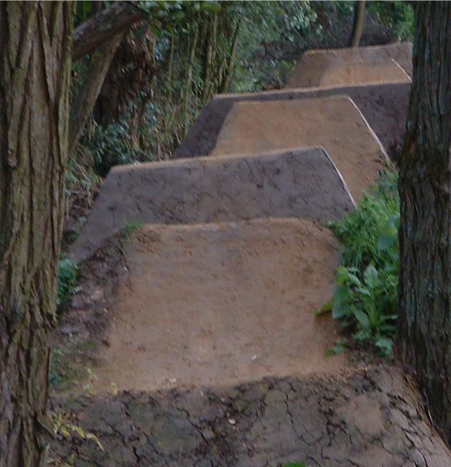 16th AugustWent to Tenterden last night to help out with the trails. They are looking good apart from the bits that pikeys have kicked in. Lots more still to do but theres a lot of potential now. 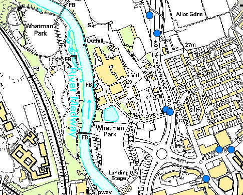 This is a map of Maidstone. In the bottom right corner is where my new job will be. I start on 13th September. In the top right corner is Whatman Park (Maidstone skatepark). Guess what I will be doing every lunchtime. This is really good as I have never really had a local park or anything, so I hope it can learn lots of new stunts.The other good thing is that this park is always strangely dry compared to other palces so it's a good place to be in the winter. I am pretty excited by it as you can probably tell. No diggity no doubt. Someone's been hard at work in the mud. I could tell you where these trails are but then, as the saying goes, i would have to kill you. People have been threatened with guns. 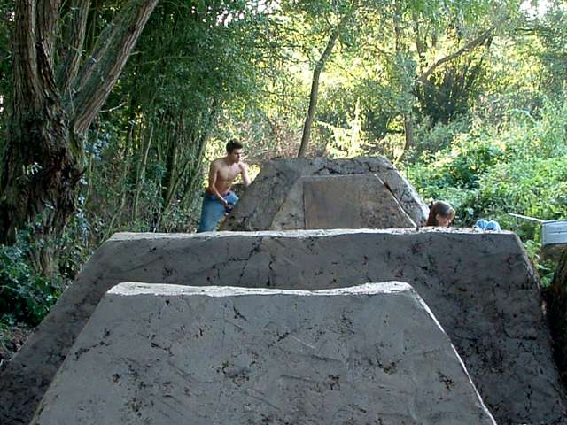 Team work at it's best. The wife reading a book, me doing all the digging and Tim behind the lens ;) The radio playing some classic backstreet and a bit of dancing at the trails just to keep things fresh. 14th August 2004 This is the jump i injured my heel on. It is still hurting which is really annoying but its so wet at the moment that I guess I couldn't ride anyway. I was saying about a week ago that August is way to late to be starting new trails but I guess with all this rain, now it's not. 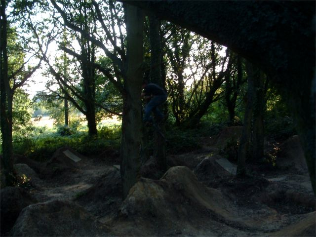 When you are up close that lip looks really steep but in the photo is doesn't look too steep. I am giving Tim driving lessons at the moment which is interesting. He drove me to casualty last night but the doctor said that if my foot was broke it would be swollen after 9 days. Remember that. 12th August 2004. I haven't ridden for over a week now. Last week we went to Tenterden and I landed on my ankle and it still hurts so I can't walk properly. The picture below is Tim at Tenterden. 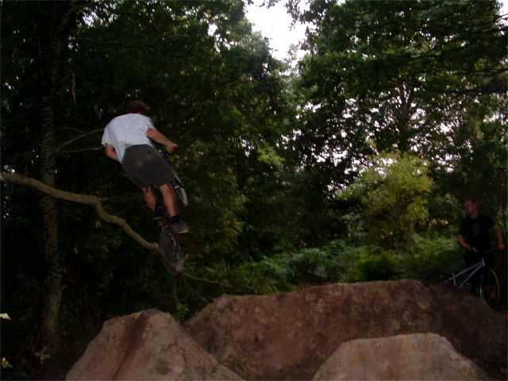 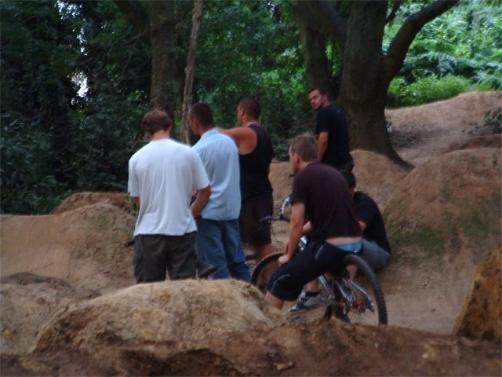 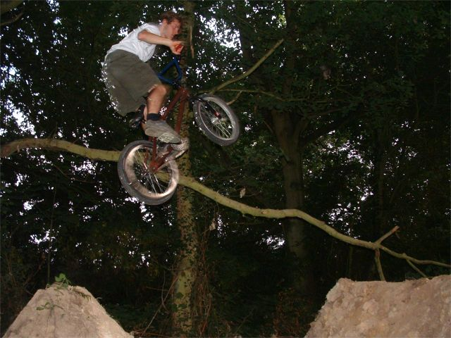 New line may be underway now. We need to go down and help sometime. I want the build the second landing in the big line up so it joins up with Dean's line for those transfer lines too. 11th August 2004. 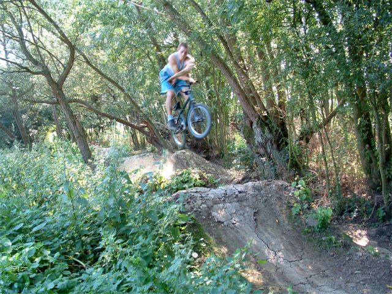 10th August 2004. This is officially the first time that the word "Shrimmo" has been used on the internet. His name is Mark Shrimpton but we all call him Shrimmo. It's someone at my work. He has the picture below on his desktop: 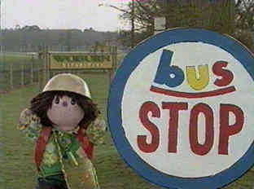 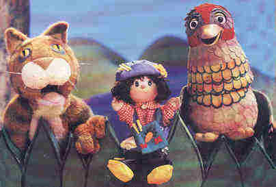 Tim works at the same place as me now which is a bit weird. I just went onto kazaa lite, searched for Elliott Smith, and downloaded every result. I strongly suggest you do the same. It's raining so why aren't you digging? 9th August 2004.Went to Thorpe Park last week for my sister's birthday. The rides were pretty fun and I didn't feel sick or anything until I went on one which was called Vortex. It was kind of like being on someone's wheel when they were tabling and it made me feel really dodgy so I stayed on the 10 looping roller coaster for the rest of the afternoon. Below is a picture of Samuri which is a good ride becasue it is different every time. It's better when you are on the end because you move faster. Forces of up to 5G or something. Phebe is the one on the arm where you can see the people, second from the right. 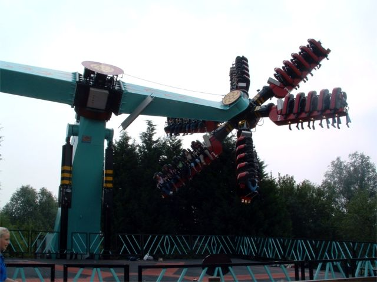 The rest of the day we got pretty wet. We went on a ride called tidal wave which bascially you just go down a massive slide into a lake and get totally wet as if you have had a shower. Then there was a massive thunder storm and we got drenched again. That's tidal wave below. 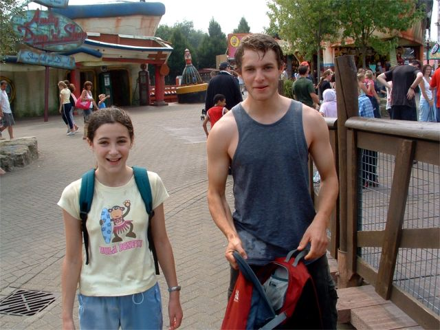 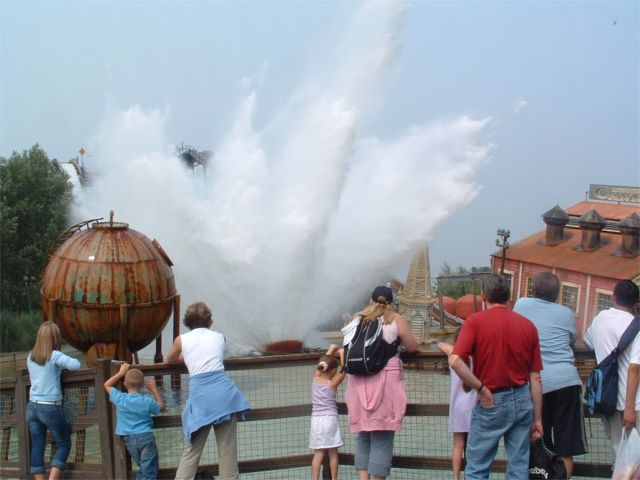 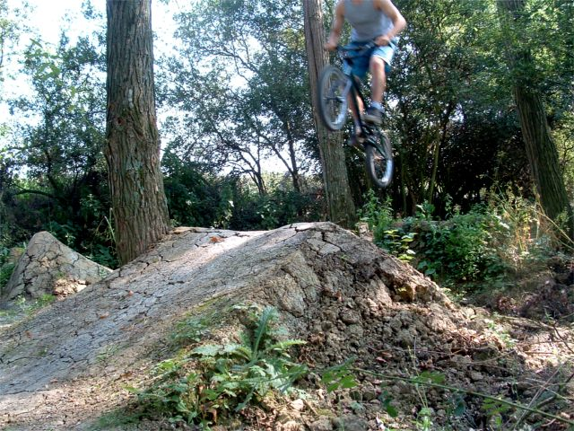 I said an update everyday and I hope I can do it. Here is todays, just using up some pictures. There has been talk of a jam at Tenterden which is a great idea but no date is set yet. Going for a meeting about the skatepark sometime as well. Summer is flying by, so have to make some winter plans. 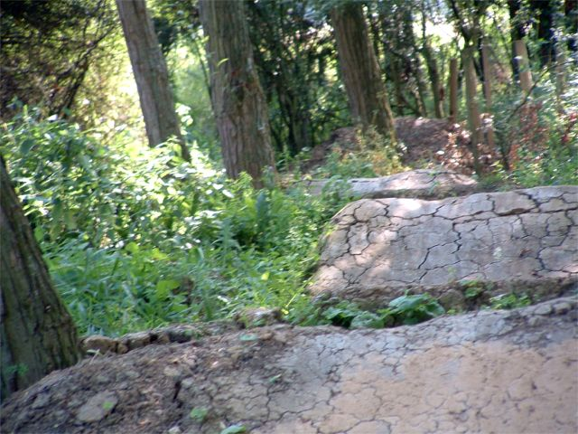 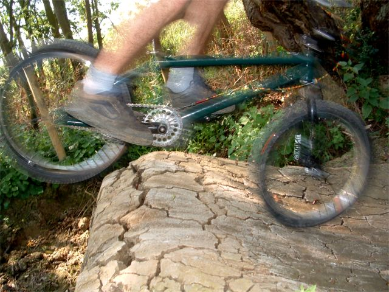 7th August 2004. Welcome to Scruffian.com. This site isn't just about bike riding. In which case you guess it's a lifestyle thing. Wrong again. Its even more pretentious. It's about art. Well that's what I think. I know how bad that sounds and I hate the word art, but that is the only label that seems to fit. Riding is art, photography is art, websites are art, music is art. I nearly called in Artyfag.com. Anyway that's the deal so live with it. Updates everyday (fingers crossed), bad ones in news, good ones in media. Do your stuff in the book and links are the same. My two favorite films are on TV so which one do I watch? Oh yes, I have a new job which starts in about a month. It's in maidstone so this winter I will be a maidstone local. Not all of the old media is working yet. I am on the case... |
|
|